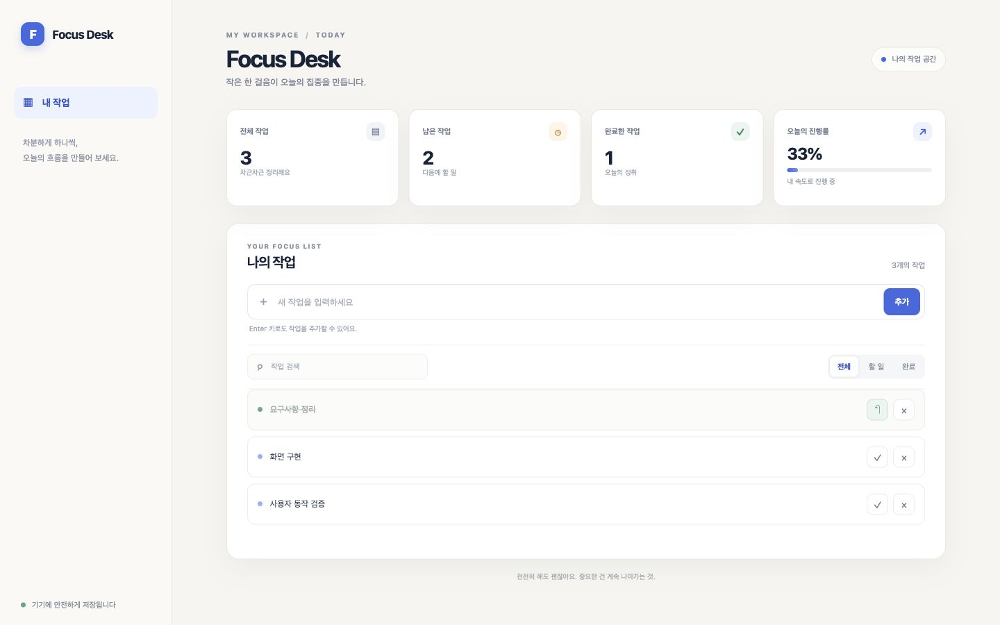
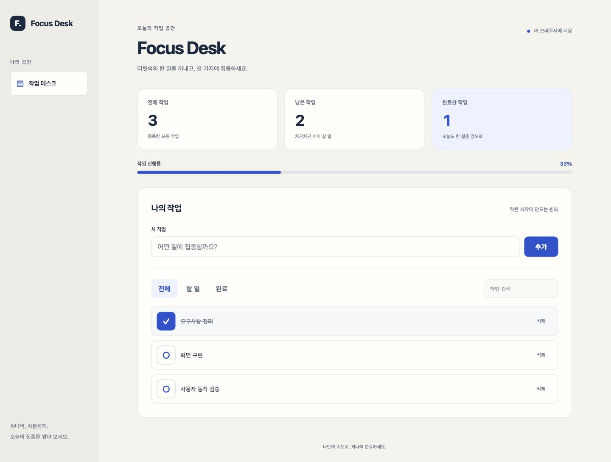
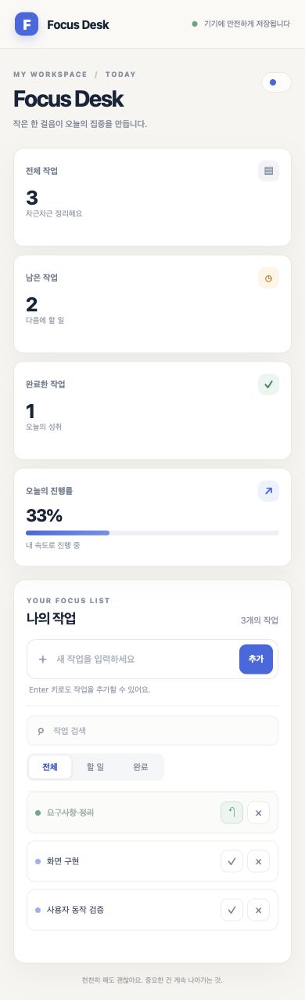
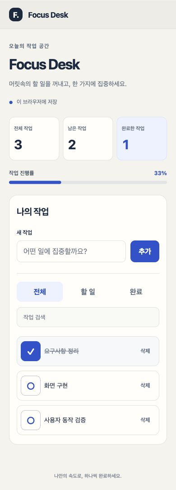
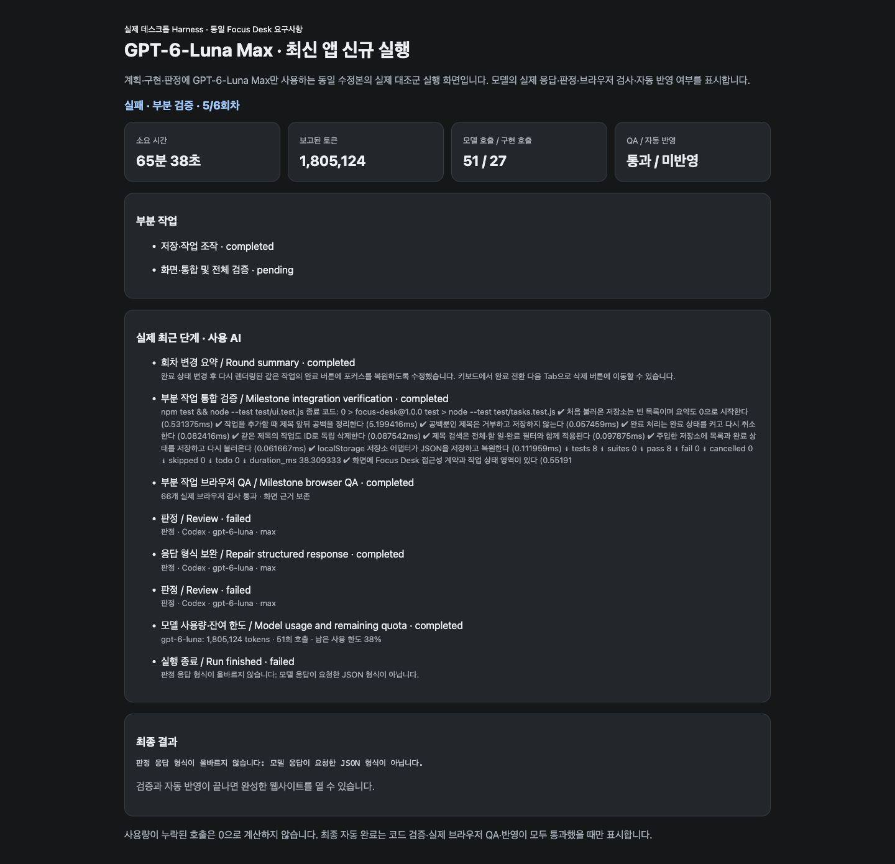
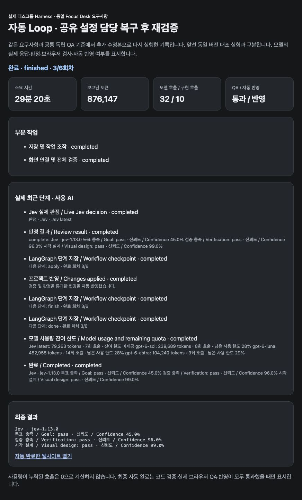

추가 수정본 실제 실행 요약
종료 후 실행 안내 보완은 별도 기록
29분 20.430초 · 사용량 누락 없음
두 화면 크기 · 36/36 관찰 통과
추가 보완 후 별도 재검증
| 항목 | 추가 보완 후 자동 Loop |
|---|---|
| 실행 소스 | e8310cf7cee4995970e5300ad870eeda9a4dbab1 |
| 자동 완료·반영 | 완료·반영 1/1 |
| 실행 시간 | 29분 20.430초 |
| 보고 토큰 | 876,147 |
| 호출 / 실제 구현 호출 | 32 / 10 |
| 사용량 미확인 호출 | 0 |
| 전체 검증 완료 | 통과 |
| 프로젝트 테스트 | 통과 · 14/14 |
| 실제 브라우저 QA | 4회 · 각 실행기 관찰 66/66 통과 |
| 공통 독립 QA | 18/18 · 두 화면 통과 · 36/36 관찰 |
| 실행 중 코드 수정 / 중지 / 재개 | 0 / 0 / 0 |
| 형식 검증 실패 호출 | 4 |
| 신규 선행 담당 재개 분기 실제 발생 | 0 |
| QA 계획 보완 연장 | 0 |
QA 계획 보완을 기본 세 번에서 무조건 늘리는 대신, 실제 부분 보완 뒤 새로 나온 구체적 근거에만 추가 시도를 부여했습니다. 최대 여섯 번이며 반복·무근거 거부는 연장하지 않습니다. 이전 보완 사유를 보존하고, 개별 검사에 반복하던 판정 설명을 공통 기준으로 한 번 전달합니다. 모든 질문의 의미와 실제 완료 게이트는 유지했습니다.
또한 대체 모델에 이전 응답의 구체적인 형식 검증 오류를 전달하고, QA 실행 계약에 허용 키 목록을 포함했습니다. 잘못된 키는 실제 값과 허용 목록을 명시하며 임의 정규화나 새 키 실행은 하지 않습니다. 유효한 부정 판정을 뒤집기 위한 모델 교체는 하지 않습니다.
마지막 부분 작업의 실제 통합 실패는 기존 파일 담당 작업으로 다시 전달합니다. 완료된 선행 작업을 보완해야 하면 이전 완료 근거를 보존하며 다시 열고 관련 후속 작업도 재검증합니다. 담당 파일 범위를 넓히거나 완료 기준·검증 명령을 완화하지 않습니다. 실행 검사가 통과하고 판정만 유효하게 거부된 경우에는 다른 작업을 재지정하지 않습니다. 실제 Sol 대체 요청에도 원래 목표와 직전 형식 오류가 전달된 것을 이번 e8310cf 실행에서 확인했습니다.
고정 검사 16개의 개별 기준·질문 부분은 UTF-8 JSON 기준 11,659바이트에서 2,937바이트로 줄었습니다. 이는 해당 문단의 입력 크기 비교이며 전체 요청 토큰 절감이나 과금 절감으로 환산하지 않았습니다.
이번 실행에서는 Astra High와 Luna High의 구현 JSON 응답 오류 뒤 저장된 Sol High로 전환해 테스트와 설명 문서를 작성했습니다. 최종 검토에서 잘못된 file:// 실행 설명이 지적되자 기존 통합 담당 선택을 통해 Luna High가 문서를 보완했고, 전체 테스트와 실제 브라우저 QA를 다시 통과한 뒤 반영했습니다. 새로 추가한 선행 파일 담당 재개 분기는 이번 실제 실행에서 발생하지 않았으며, 실제 파일을 사용하는 통제 회귀 3/3으로 동작 경계를 확인했습니다. 따라서 이번 완료를 그 신규 분기 하나의 효과라고 단정하지 않습니다.
단일 모델의 생성 화면은 독립 검사 18/18, 36/36 관찰을 통과했지만 마지막 판정 응답 형식 오류로 자동 반영되지 않았습니다. 자체/부분 통합 검사 통과와 전체 자동 완료를 구분했습니다. 단일·Loop의 자체 테스트 수는 서로 다른 모델 산출물이므로 품질 점수로 비교하지 않습니다. 이 추가 실행의 성공 여부도 한 번의 관찰이며 일반적인 성공률이 아닙니다.
추가 수정본 집중 회귀 3/3, 전체 회귀 265/265 통과. 데스크톱 패키징과 소스/패키지 일치, 정상 종료 후 새 앱 프로세스 실행을 확인했습니다.
추가 보완 후 계획별 모델 배정
| 부분 계획 | 배정 모델 | Effort | 선택 기록 |
|---|---|---|---|
| 저장 및 작업 조작 | gpt-6-luna | high | 구현 → 기존 기본 모델 유지 · 후보별 실측이 각 1회로 완료 안정성이나 우선순위 기준의 차이를 판단하기에 부족합니다. 제공된 기본 순서를 유지합니다. |
| 화면 연결 및 전체 검증 · 검증 피드백 반영 | gpt-6-astra | high | 구현 → gpt-6-astra · 대체 2개 순위 저장 · 현재 단계는 접근성, 저장 복원, 화면 통합과 브라우저 QA까지 포함하는 범위가 넓은 작업입니다. 후보 중 gpt-6-astra는 제공된 설명상 가장 까다로운 작업에 맞고, 높은 추론 강도를 지원하며 남은 한도도 다른 후보와 같습니다. 성공·검증 실측은 Astra와 Luna 모두 1회뿐이므로 성능 우위로 판단하지 않았습니다. 나머지 후보는 구분할 근거가 부족해 기존 순서를 유지했습니다. |
| 화면 연결 및 전체 검증 · 검증 피드백 반영 | gpt-6-luna | high | 구현 → gpt-6-luna · 대체 1개 순위 저장 |
설정 후보·계획 배정·실제 호출은 서로 다른 기록입니다. 형식 오류 뒤 실제 대체 구현 호출도 아래 표에 포함됩니다.
추가 보완 후 실제 모델 사용
| 역할 | 실제 모델 | Effort | 호출 | 보고 토큰 | 미확인 |
|---|---|---|---|---|---|
| judge | jev-latest | default | 7 | 79,263 | 0 |
| planner | gpt-6-sol | high | 5 | 131,470 | 0 |
| judge | gpt-6-luna | max | 9 | 299,952 | 0 |
| worker | gpt-6-luna | high | 5 | 153,003 | 0 |
| worker | gpt-6-astra | high | 3 | 104,240 | 0 |
| worker | gpt-6-sol | high | 2 | 81,300 | 0 |
| judge | gpt-6-sol | high | 1 | 26,919 | 0 |
같은 요구사항의 독립 QA 결과
| 번호 | 고정 독립 검사 | 단일 미반영 산출물 | 추가 보완 후 Loop |
|---|---|---|---|
| 1 | 처음 시작 시 실제 빈 상태와 작업 0개 표시 | PASS | PASS |
| 2 | 공백 입력 거부와 안내 | PASS | PASS |
| 3 | 추가 버튼으로 앞뒤 공백을 정리한 작업 추가 | PASS | PASS |
| 4 | Enter로 두 번째 작업 추가 | PASS | PASS |
| 5 | 동일 제목 두 작업의 독립 생성 | PASS | PASS |
| 6 | 지정 작업 완료 처리와 개수 갱신 | PASS | PASS |
| 7 | 완료 취소와 개수 갱신 | PASS | PASS |
| 8 | 전체·할 일·완료 필터의 항목과 aria-pressed | PASS | PASS |
| 9 | 제목 검색 즉시 반영 | PASS | PASS |
| 10 | 검색과 완료 필터 동시 적용 | PASS | PASS |
| 11 | 검색 결과 없음 안내 | PASS | PASS |
| 12 | 새로고침 후 목록과 완료 상태 복원 | PASS | PASS |
| 13 | 중복 제목 중 하나만 삭제 | PASS | PASS |
| 14 | 마지막 항목 삭제 후 실제 빈 상태 복귀 | PASS | PASS |
| 15 | HTML 형태의 제목을 문자로 표시 | PASS | PASS |
| 16 | 동작 결과를 라이브 status 영역에 표시 | PASS | PASS |
| 17 | Tab/Enter 조작과 현재 포커스 표시 | PASS | PASS |
| 18 | 긴 제목을 포함한 모바일·데스크톱 가로 넘침 없음 | PASS | PASS |
추가 보완 전 같은 수정본의 대조 실험
| 비교 항목 | GPT-6-Luna Max 단일 Harness | 자동 Loop Harness |
|---|---|---|
| 자동 완료·반영 | 미완료 0/1 | 미완료 0/1 |
| 실행 시간 | 65분 38.871초 | 20분 30.444초 |
| 보고 토큰 | 1,805,124 | 245,197 |
| 모델 호출 | 51 | 11 |
| 사용량 미확인 호출 | 0 | 0 |
| 실제 구현 호출 | 27 | 0 |
| 응답 형식 검증 실패 호출 | 9 | 0 |
| 자동 구현 모델 교체 | 0 | 0 |
| 완료한 부분 작업 | 1/2 | 0/0 |
| 프로젝트 테스트 | 통과 · 8/8 + 4/4 | 미실행 |
| 자동 브라우저 QA | 2회 · 통과 | 0회 · 미통과/미실행 |
| 최종 전체 검증 완료 상태 | 미완료 · 부분 통합 결과와 구분 | 미완료 · 부분 통합 결과와 구분 |
| 실제 브라우저 QA 실패 후 보완 | 1 | 0 |
| 공통 독립 QA 18개 | 18/18 · 두 화면 통과 | 미실행 |
| 실행 중 코드 수정 / 중지 / 재개 | 0 / 0 / 0 | 0 / 0 / 0 |
한 구성 이상이 자동 완료 또는 공통 QA를 마치지 못했으므로, 두 구성의 시간을 동일 품질의 완료 작업 처리 속도로 비교하거나 토큰 절감률을 성능 우위로 계산하지 않습니다. 단일 종료 사유: 판정 응답 형식이 올바르지 않습니다: 모델 응답이 요청한 JSON 형식이 아닙니다. / Loop 종료 사유: 독립 QA 계획이 목표를 충족하지 못했습니다. Add the missing observable behavior checks before implementation. 입력·저장·빈 상태·키보드·반응형 레이아웃을 포함한 상호작용 검사는 충분합니다. 다만 `#task-list > li` 선택자는 `li`만 확인하고 목록 컨테이너가 `ul` 또는 `ol`인지 확인하지 않아, 각 항목의 listitem 의미가 보장되지 않습니다. 목록 컨테이너와 항목의 의미 구조를 확인하는 검사를 추가하세요.
각 구성 1회 관찰입니다. 1/1과 0/1은 이번 실측의 완료 결과이며 일반적인 성공 확률이 아닙니다. 미실행 QA는 0/18 기능 실패가 아닙니다. 공급자별 토크나이저와 캐시 기준이 다르고 이 로그에는 입력·출력·캐시별 토큰이 따로 기록되지 않아, 합계를 달러 과금이나 내부 연산량으로 환산하지 않았습니다.
사람의 개입과 완료 조건
동일 버전 대조 실험의 두 신규 실행 중 생성 코드를 직접 수정하거나 실행을 중지·재개한 횟수는 두 구성 모두 0입니다. 단일 구성이 미완료라면 이 0회가 무개입 성공을 뜻하지 않습니다. 독립 QA 입력·측정 준비·보고서와 종료 후 보관 커밋은 별도 작업이며, 사람의 분 단위 공수는 계측하지 않았습니다.
완료는 completed·verificationPassed·browserQaPassed·applied 모두 충족한 경우입니다. 독립 QA는 생성 전에 확정한 18개 기준을 두 크기에 적용했습니다.
자동 생성 화면 · 데스크톱 비교




자동 생성 화면 · 모바일 비교




주요 변경 사항
- 마지막 웹 부분 작업의 판정 전에 전체 테스트와 실제 브라우저 QA를 실행해, 판정이 검증을 기다리고 검증이 판정을 기다리던 순환 대기를 해결했습니다. 최종 반영 전에도 테스트와 QA를 다시 실행합니다.
- QA 계획을 전부 재작성하던 보완을 부분 추가·교체로 바꿨습니다. 통과한 검사와 순서·selector·assertion을 보존하며, 거부된 검사만 교체합니다. 검사 16개 한도에서도 기존 단계 뒤에 확인을 추가할 수 있습니다.
- 구현 전 계획의 판정에 현재 단계와 실행 계약을 전달했습니다. 별도의 Node 테스트와 최종 코드·설계 검토를 브라우저 행동 검사에 중복 요구하지 않도록 했습니다.
- 근거 없이 전체 QA 범위만 거부하는 Jev 판정은 저장된 다음 판정 후보가 같은 기준으로 검토합니다. 실제 실행·QA·반영 조건을 우회하는 승인은 추가하지 않았습니다.
- 화면에 표시되지 않는 문서 title 등의 가시성 검사를 계획 확정 전에 거부합니다. 입력값과 selector 리터럴을 일치시키고, 긴 문자열 반복 횟수가 어긋난 검사를 만들지 않도록 생성·보완·판정에 안내합니다.
- 순서나 묶음을 바꾼 같은 파일 조회도 정체로 감지합니다. 안내 후 반복되면 저장된 다음 구현 모델로 이어갑니다. 새 경로 조회와 수정 후 조회는 허용하고, 외부 MCP 실행 이후에는 자동 교체하지 않습니다.
- 디렉터리 목록과 최근 작업 기록이 큰 파일 본문 뒤에서 사라지지 않도록 전달 순서를 조정했습니다. 파일 본문은 개별 전달해 최신 파일 중간이 이전 파일과 합산되어 잘리는 문제를 막았습니다. 전체 전달 한도는 유지합니다.
- 공유 설정 재판정에 전체 파일 목록과 관련 단계 상태·검증 근거를 전달합니다. 담당 파일 미리보기에 없는 UI 테스트를 없다고 오인하지 않게 하고, 잘림 여부를 명시합니다. 유효하지 않은 과거 검증은 현재 근거로 전달하지 않습니다.
- 브라우저 QA에서 같은 조건에 여러 버튼이 걸릴 때 첫 번째 요소 대신 실제 포커스된 요소를 검사합니다. 검사 조건 밖의 포커스·숨긴 대상·시각 표시 부재는 계속 실패하며 다음 Enter/삭제 결과 검사도 유지합니다.
- 없는 담당 파일은 write로 생성하고, done 이후 Harness가 실제 검증한다는 경계를 안내합니다. 통합 실패 담당 선택이 잘못된 ID를 반환해도 기존 대체 작업을 보존합니다.
추가 보완 전 대조 실험의 모델 배정
| 부분 계획 | 실제 구현 모델 | Effort | 선택 근거 |
|---|
추가 보완 전 대조 실험의 실제 토큰
| 구성 | 역할 | 실제 모델 | Effort | 호출 | 보고 토큰 | 미확인 |
|---|---|---|---|---|---|---|
| GPT-6-Luna Max 단일 Harness | planner | gpt-6-luna | max | 10 | 291,684 | 0 |
| GPT-6-Luna Max 단일 Harness | judge | gpt-6-luna | max | 14 | 493,057 | 0 |
| GPT-6-Luna Max 단일 Harness | worker | gpt-6-luna | max | 27 | 1,020,383 | 0 |
| 추가 보완 전 동일 버전 자동 Loop | judge | jev-latest | default | 3 | 18,769 | 0 |
| 추가 보완 전 동일 버전 자동 Loop | planner | gpt-6-sol | high | 4 | 101,534 | 0 |
| 추가 보완 전 동일 버전 자동 Loop | judge | gpt-6-luna | max | 3 | 113,332 | 0 |
| 추가 보완 전 동일 버전 자동 Loop | planner | models/gemini-3-flash-preview | default | 1 | 11,562 | 0 |
Loop의 실제 호출 모델은 jev-latest, gpt-6-sol, gpt-6-luna, models/gemini-3-flash-preview입니다. 설정 후보와 실제 호출을 구분했습니다. 각 모델 호출 시간 합계와 전체 실행 시간은 다른 지표이며 사용량 미확인 호출은 0 사용으로 해석하지 않습니다.
공통 독립 브라우저 QA 18개
| 번호 | 공통 독립 검사 | 단일 Harness | Loop |
|---|---|---|---|
| 1 | 처음 시작 시 실제 빈 상태와 작업 0개 표시 | PASS | NOT_RUN |
| 2 | 공백 입력 거부와 안내 | PASS | NOT_RUN |
| 3 | 추가 버튼으로 앞뒤 공백을 정리한 작업 추가 | PASS | NOT_RUN |
| 4 | Enter로 두 번째 작업 추가 | PASS | NOT_RUN |
| 5 | 동일 제목 두 작업의 독립 생성 | PASS | NOT_RUN |
| 6 | 지정 작업 완료 처리와 개수 갱신 | PASS | NOT_RUN |
| 7 | 완료 취소와 개수 갱신 | PASS | NOT_RUN |
| 8 | 전체·할 일·완료 필터의 항목과 aria-pressed | PASS | NOT_RUN |
| 9 | 제목 검색 즉시 반영 | PASS | NOT_RUN |
| 10 | 검색과 완료 필터 동시 적용 | PASS | NOT_RUN |
| 11 | 검색 결과 없음 안내 | PASS | NOT_RUN |
| 12 | 새로고침 후 목록과 완료 상태 복원 | PASS | NOT_RUN |
| 13 | 중복 제목 중 하나만 삭제 | PASS | NOT_RUN |
| 14 | 마지막 항목 삭제 후 실제 빈 상태 복귀 | PASS | NOT_RUN |
| 15 | HTML 형태의 제목을 문자로 표시 | PASS | NOT_RUN |
| 16 | 동작 결과를 라이브 status 영역에 표시 | PASS | NOT_RUN |
| 17 | Tab/Enter 조작과 현재 포커스 표시 | PASS | NOT_RUN |
| 18 | 긴 제목을 포함한 모바일·데스크톱 가로 넘침 없음 | PASS | NOT_RUN |
실패·중지까지 포함한 개선 비용
| 진단 시도 | 결과 | 시간 | 보고 토큰 | 호출 / 구현 | 외부 중지 |
|---|---|---|---|---|---|
| QA 부분 보완 1차 | 미완료 0/1 | 6분 32.610초 | 최소 164,980 | 14 / 0 | 0 |
| 부분 계획 맥락 2차 | 외부 진단 중지 · 미완료 | 9분 54.883초 | 최소 90,544 | 7 / 0 | 1 |
| 검사 한도 보완 3차 | 미완료 0/1 | 4분 25.317초 | 최소 169,421 | 11 / 0 | 0 |
| 판정 근거 복구 4차 | 외부 진단 중지 · 미완료 | 12분 35.271초 | 최소 91,236 | 7 / 0 | 1 |
| QA 근거 선확보 5차 | 외부 진단 중지 · 미완료 | 24분 55.126초 | 최소 1,234,675 | 41 / 16 | 1 |
| 통합 QA 순서 수정 6차 | 외부 진단 중지 · 미완료 | 25분 27.764초 | 최소 1,779,339 | 55 / 38 | 1 |
| 5차 보존 산출물 복구 · 추가분 | 외부 재개 및 진단 중지 | 4분 56.347초 | 최소 580,956 | 17 / 12 | 1 |
| 앞선 Loop 7차 신규 성공 | 완료·반영 1/1 | 19분 2.299초 | 675,461 | 24 / 5 | 0 |
| 앞선 단일 진단 중지 | 외부 진단 중지 · 미완료 | 41분 36.983초 | 최소 1,507,929 | 46 / 22 | 1 |
| 구버전 프로세스 재개 추가분 | 미완료 0/1 | 1분 52.050초 | 103,273 | 3 / 2 | 0 |
| GPT-6-Luna Max 단일 Harness | 미완료 0/1 | 65분 38.871초 | 1,805,124 | 51 / 27 | 0 |
| 추가 보완 전 동일 버전 자동 Loop | 미완료 0/1 | 20분 30.444초 | 245,197 | 11 / 0 | 0 |
| QA 보완 연장 후 형식 오류 종료 | 미완료 0/1 | 8분 50.264초 | 260,128 | 12 / 0 | 0 |
| 공유 설정의 담당 범위 정체 진단 중지 | 외부 진단 중지 · 미완료 | 27분 14.130초 | 최소 1,179,226 | 40 / 14 | 1 |
| 파일 담당 복구 후 자동 Loop 재검증 | 완료·반영 1/1 | 29분 20.430초 | 876,147 | 32 / 10 | 0 |
각 진단에서 확인한 원인과 한계
1차: QA 계획 15개는 확정했지만 부분 작업 계획이 세 번 거부돼 구현 전 종료했습니다.
2차: 개별 검사 16개가 보존 대상인데 추가·교체가 모두 막힌 보완 규칙의 충돌을 확인해 외부 진단 중지했습니다.
3차: 기존 검사 16개에 42단계를 추가했지만 Jev의 전체 범위 거부로 종료했습니다.
4차: 전체 범위 거부에 구체적 사유가 없는 상태에서 보완 응답을 9분 이상 기다려 외부 진단 중지했습니다.
5차: 구현과 테스트가 생성됐지만 마지막 부분 작업의 판정과 전체 QA 실행의 순환 대기를 확인해 중지했습니다.
5차 별도 복구: 엔진 수정 후 외부 재개로 Node 테스트 16개와 실제 브라우저 QA까지 실행했습니다. 문서 title 가시성 검사와 13회 입력을 12회 반복 버튼 이름으로 찾는 동결 QA 계약의 모순을 확인해 다시 중지했습니다. 동결 계약이나 생성 코드를 외부에서 수정해 통과시키지 않았습니다. 표에는 재개 후 추가 시간과 토큰만 포함했습니다.
6차: 핵심 테스트 13개를 통과하고 화면도 생성했지만, 구현 모델이 파일 묶음과 순서를 바꿔 반복 조회하고 없는 README를 읽으려 했습니다. 외부에서 중지한 시도의 구현 호출 38회와 최소 1,779,339토큰도 기록했습니다.
앞선 단일 진단: 공유 package.json의 전체 테스트 설정을 변경하자 기존 UI 테스트를 없는 파일로 오인하는 판정 반복이 있었습니다. 실제 삭제 버튼에 포커스가 있어도 제목에 삭제가 포함된 완료 버튼을 비교한 QA 실행기 오류도 확인했습니다. 패키지 갱신 뒤 구버전 프로세스가 남은 재개는 실패 비용으로 포함했으며 최신 앱 실행으로 집계하지 않습니다.
앞선 7차: 핵심 로직은 Luna High, 화면 통합은 Astra High로 수행했습니다. 반복 조회 대체 전환은 발생하지 않았으며 해당 경계는 회귀 테스트로 확인했습니다. 실제로는 Jev 판정 근거 복구와 모델 배정 응답 형식 오류의 대체 판정이 발생했습니다.
실제 완료 증거




엔진 구현·검증 커밋
- e0bc2c7 fix: QA 계획의 통과 검사 보존과 부분 보완으로 재작성 방지
- 4dc6e25 test: QA 부분 보완의 검사 보존과 판정 및 반영 차단 검증
- c7b24cb fix: 부분 작업 판정에 구현 전 단계와 실제 QA 실행 계약 전달
- 7725178 test: 부분 작업 계획 판정과 실제 완료 근거의 경계 검증
- e22f8ea fix: QA 검사 한도에서도 기존 기준을 보존하며 누락된 확인 추가
- 3089a88 test: 최대 QA 검사 수에서 기준 보존과 추가 확인 검증
- 8829751 fix: 근거 없는 계획 거부 반복을 저장된 다음 판정 모델로 복구
- e744b9b test: 계획 재판정의 동일 기준과 실패 시 자동 반영 차단 검증
- 5c2b126 fix: 전체 QA 범위의 무근거 거부에서 보완 사유를 먼저 확보
- 2c53675 test: QA 범위 거부와 개별 실패의 판정 교체 시점 검증
- 17a60af fix: 마지막 웹 부분 작업 판정 전에 통합 검증과 실제 QA 실행
- 342df9c fix: 잘못된 통합 수정 담당 응답에서도 기존 대체 작업 보존
- a6df099 test: 마지막 웹 부분 작업의 실제 QA 순서와 실패 차단 검증
- f1b2ef5 fix: 실행 불가능한 화면 검사와 QA 입력 리터럴 모순 예방
- 76ab45c test: 화면 메타데이터와 QA 입력 계약의 검증 경계 확인
- 8c89bd5 fix: 파일 조회 정체를 감지해 저장된 다음 구현 모델로 복구
- 36d07e6 test: 조회 정체 복구와 실제 검증 및 MCP 실행 경계 확인
- 791256e fix: 최근 파일 본문이 이전 파일과 합산되어 잘리는 오류 방지
- 5b76798 test: 최신 파일 본문 보존과 전체 전달 한도 검증
- 09a0f8c fix: 공유 파일 재판정에 전체 파일 존재와 단계별 검증 근거 전달
- 02a41e3 test: 공유 설정 재판정과 실제 검증 실패의 완료 차단 확인
- a843ce5 fix: 브라우저 QA가 실제 포커스 요소를 비교해 오판 방지
- 69af8e8 test: 복수 조건 일치 요소의 실제 포커스와 표시 실패 검증
회귀 검증과 적용 범위
추가 보완 전 69af8e8 엔진 집중 회귀 61/61, 전체 회귀 252/252 통과. 데스크톱 패키징 성공과 검사한 엔진·브라우저 QA 소스 및 패키지 파일 일치를 확인했습니다. 실제 앱을 정상 종료한 뒤 새 프로세스로 시작한 것을 확인했습니다. 통제 응답 회귀 검사와 실제 외부 모델 실행을 구분했습니다.
- 두 구성은 순차 실행했고 각 신규 실행 중 추가 엔진 수정과 외부 코드 수정은 하지 않았습니다. 반복 실험 전에는 작업 환경 변동의 영향을 분리할 수 없습니다.
- 이번 비교의 Plugin/MCP는 꺼져 있습니다. Paper/Figma 호출 성능은 측정하지 않았습니다.
- 판정 모델의 시각 설계 평가는 diff 근거이며, 직접 본 화면이라는 주장으로 집계하지 않았습니다. 별도 브라우저에서 실제 결과 화면과 반응형 배치를 확인했습니다.
- 자동 반영한 산출물과 미반영 작업 공간을 구분했습니다. 보관 커밋은 종료 후 내용 변경 없이 구현·테스트·문서로 나눴고, 미반영 산출물은 원래 작업 공간을 바꾸지 않고 별도 복사본에 보관합니다. 개인 키, 인증 정보와 계정 식별 정보는 보고서에서 제외했습니다.
추가 보완 근거 자료

- ba3954c fix: 진행 중인 QA 부분 보완을 제한 안에서 이어가며 중복 판정 입력 축소
- 70c614e test: QA 보완 연장의 진행 조건과 상한 및 실제 실패 차단 검증
- 31017cf fix: 대체 모델에 구체적인 응답 검증 오류와 허용 키 계약 전달
- c45d4d3 test: 형식 오류의 대체 전달과 부정 판정 및 실제 QA 실패 차단 검증
- c670f50 fix: 부분 통합 실패를 파일 담당 선행 작업으로 전달
- e8310cf test: 공유 설정 담당 복구와 실제 완료 게이트 검증
독립 QA 후 실행 안내의 추가 보완
| 항목 | 실측 |
|---|---|
| 원래 웹사이트 실행 중 코드 수정 / 중지 / 재개 | 0 / 0 / 0 |
| 원래 문서 기본 주소 응답 | 403 |
| 후속 외부 문제 전달 / 문서 전달 | 1회 / 1회 |
| 별도 보완 실행 | 완료·반영 |
| 후속 소요 시간 | 2분 47.742초 |
| 후속 보고 토큰 | 237,290 |
| 후속 호출 / 구현 호출 | 12 / 3 |
| 보완 후 실제 기본 주소 | 200 |
| 기능 코드 직접 수정 | 0회 |
| 최종 납품 전체의 무개입 성공 | 아님 · 종료 후 문서 보완 목표 전달이 필요했음 |